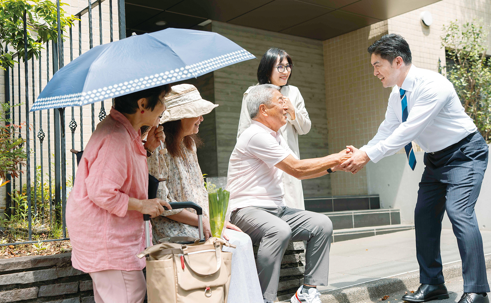
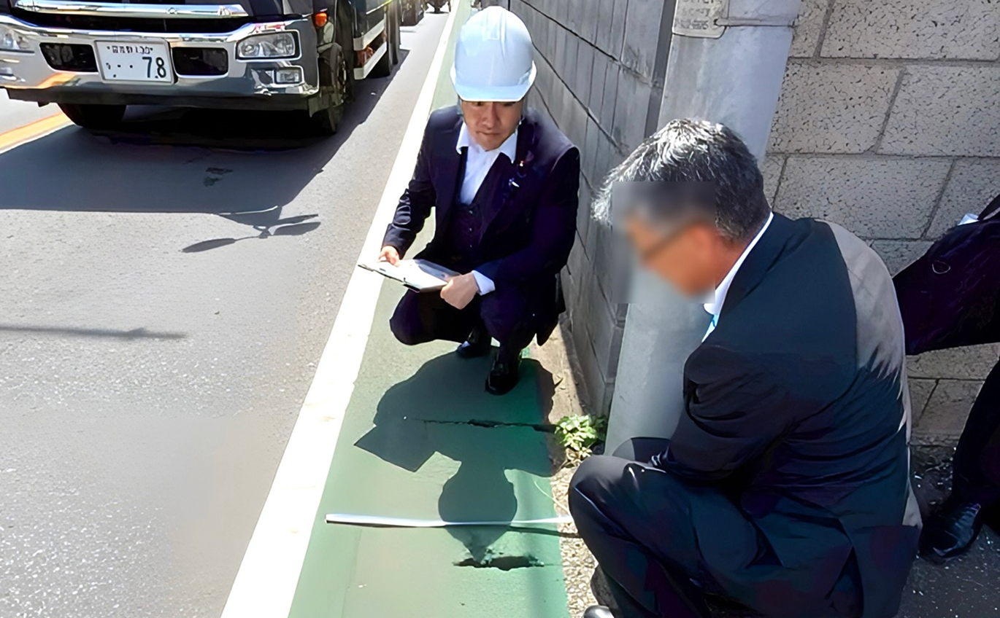
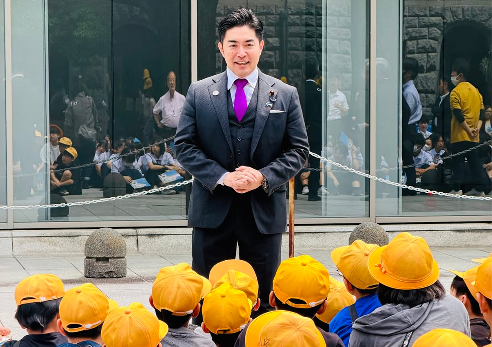

全世代が住みよい地域へ
- 混雑駅の構内整備促進による通勤の快適性向上
- 新湾岸・北千葉道路開通を見越した地域内道路の渋滞対策
- 高齢者の社会参加、就労支援、買い物弱者支援の促進
- 穏やかな最期を迎えるための訪問診療・在宅終末期ケア
- 多世代居住促進モデル地区を設定し、子育て支援と介護支援両立
- DX推進と連座制の強化による政治資金の透明化
- 地域住民が安心して暮らせる多文化共生仕組み作り
- 米を含む農作物の価格安定供給と農家保護の制度・組織を整備




鹿嶋祐介事務所です。
— 鹿嶋祐介｜衆議院議員｜自民党 (@kashimayusuke_) 2026年10月30日
財務金融委員会終了後、すぐに「青年局中央常任委員会・青年局役員会合同会議」へ。
地域で活動する若い世代の声を、国政へとつなぐことも青年局の大切な役割です。日々の暮らしや仕事の中で感じる課題、将来への不安を受け止め、政策にどう反映していくか。… pic.twitter.com/VM5GUhILnu
鹿嶋祐介事務所です。
— 鹿嶋祐介｜衆議院議員｜自民党 (@kashimayusuke_) 2026年10月30日
本会議散会後、すぐに財務金融委員会が再開します。代議士の先生方が一斉に委員室へ向かい、国会内は早歩きの大移動です。… pic.twitter.com/W6cSNt4ktg